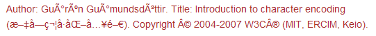
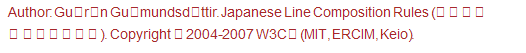

Answer
First, why should I care?
If you use anything other than the most basic English text, people may not be able to read the content you create unless you say what character encoding you used.
For example, you may intend the text to look like this:

but it may actually display like this:

Not only does lack of character encoding information spoil the readability of displayed text, but it may mean that your data cannot be found by a search engine, or reliably processed by machines in a number of other ways.
So what's a character encoding?
Words and sentences in text are created from characters. Examples of characters include the Latin letter á or the Chinese ideograph 請 or the Devanagari character ह.
{kind=link}
{kind=link}
{kind=link}
Characters that are needed for a specific purpose are grouped into a character set (also called a repertoire). (To refer to characters in an unambiguous way, each character is associated with a number, called a code point.)
The characters are stored in the computer as one or more bytes.
Basically, you can visualise this by assuming that all characters are stored in computers using a special code, like the ciphers used in espionage. A character encoding provides a key to unlock (ie. crack) the code. It is a set of mappings between the bytes in the computer and the characters in the character set. Without the key, the data looks like garbage.
So, when you input text using a keyboard or in some other way, the character encoding maps characters you choose to specific bytes in computer memory, and then to display the text it reads the bytes back into characters.
Unfortunately, there are many different character sets and character encodings, ie. many different ways of mapping between bytes, code points and characters. The section Additional information provides a little more detail for those who are interested.
Most of the time, however, you will not need to know the details. You will just need to be sure that you consider the advice in the section How does this affect me? below.
How do fonts fit into this?
A font is a collection of glyph definitions, ie. definitions of the shapes used to display characters.
Once your browser or app has worked out what characters it is dealing with, it will then look in the font for glyphs it can use to display or print those characters. (Of course, if the encoding information was wrong, it will be looking up glyphs for the wrong characters.)
A given font will usually cover a single character set, or in the case of a large character set like Unicode, just a subset of all the characters in the set. If your font doesn't have a glyph for a particular character, some browsers or software applications will look for the missing glyphs in other fonts on your system (which will mean that the glyph will look different from the surrounding text, like a ransom note). Otherwise you will typically see a square box, a question mark or some other character instead. For example:

How does this affect me?
As a content author or developer, you should nowadays always choose the UTF-8 character encoding for your content or data. This Unicode encoding is a good choice because you can use a single character encoding to handle any character you are likely to need. This greatly simplifies things. Using Unicode throughout your system also removes the need to track and convert between various character encodings.
Content authors need to find out how to declare the character encoding used for the document format they are working with.
Note that just declaring a different encoding in your page won't change the bytes; you need to save the text in that encoding too.
As a content author, you need to check what encoding your editor or scripts are saving text in, and how to save text in UTF-8. (It's usually the default these days.) You may also need to check that your server is serving documents with the right HTTP declarations.
Developers need to ensure that the various parts of the system can communicate with each other, understand which character encodings are being used, and support all the necessary encodings and characters. (Ideally, you would use UTF-8 throughout, and be spared this trouble.)
The links below provide some further reading on these topics.
{kind=link}
{kind=link}
{kind=link}